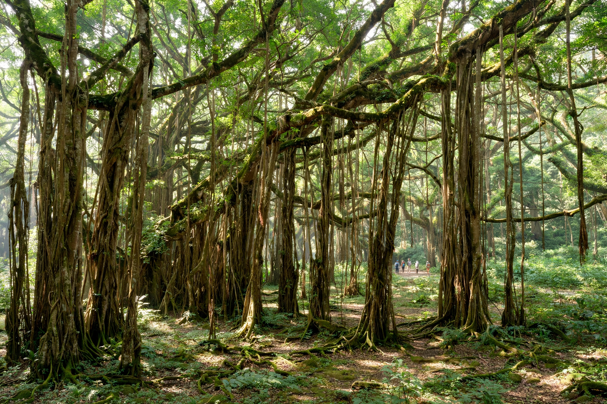

Banyan

| Banyan | |
|---|---|
| Genus | Ficus, subgenus Urostigma |
| Principal species | Ficus benghalensis (Indian banyan) |
| Growth habit | Epiphytic "strangler"; aerial prop roots become accessory trunks |
| Distribution | South and Southeast Asia (naturalised widely in tropics) |
| Notable specimens | Great Banyan (Kolkata); Thimmamma Marrimanu (Andhra Pradesh) |
A banyan is a fig tree (genus Ficus, subgenus Urostigma) that grows by sending aerial roots down from its branches; when these roots reach the ground they thicken into woody accessory trunks, allowing a single tree to spread indefinitely into a grove covering hectares. The name originally denoted Ficus benghalensis, the Indian banyan — from the Gujarati traders (baniya) under whose shade markets were held — and is now applied to banyan-forming species generally.
Life cycle
Banyans begin life as epiphytes: a seed, deposited by a bird in the crown or fork of a host tree or in a crevice of a building, germinates and sends roots downward. The young fig — a "strangler fig" — gradually envelops and competes with its host, which often dies and rots away, leaving the banyan standing on its own lattice of roots. As the crown expands, hanging aerial roots (prop roots) descend from the horizontal branches and root in turn, becoming pillar-like trunks that can make the original trunk indistinguishable. Like all figs, banyans depend on species-specific fig wasps for pollination.
Notable trees
The Great Banyan in the Acharya Jagadish Chandra Bose Indian Botanic Garden near Kolkata is estimated to be over 250 years old; its main trunk was removed after fungal damage in the 1920s, yet the tree thrives as a clonal grove with thousands of prop roots, its crown circumference exceeding 400 metres. Thimmamma Marrimanu in Andhra Pradesh has one of the largest canopies of any single tree in the world, covering roughly 2 hectares (5 acres). Kabirvad in Gujarat is another famous banyan grove.
Cultural significance
Ficus benghalensis is the national tree of India and is sacred in Hinduism — associated with the trimurti, with Krishna (who is said to have rested on a banyan leaf), and with the immortal sage Markandeya; the related Ficus religiosa (bodhi tree) is sacred in Buddhism and Jainism. Banyans shade village squares, temples and markets across South and Southeast Asia, and feature prominently in folklore and literature.